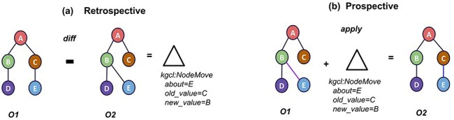
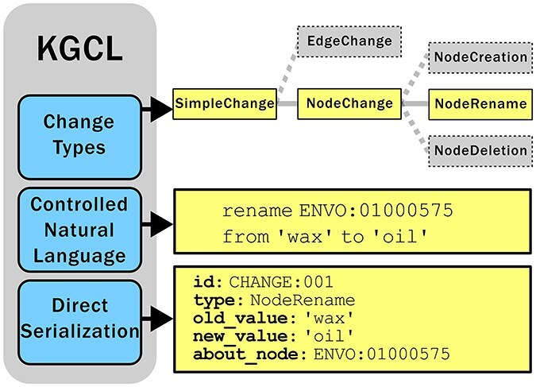

KGCL: Knowledge Graph Change Language¶
The Knowledge Graph Change Language (KGCL) is a standard for describing changes to ontologies and knowledge graphs (KGs). It describes changes at a high level, the way curators and ontology editors think about them: rename this term, add a synonym, move this class under a different parent, obsolete this term and point to its replacement.
rename UBERON:0002398 from 'manus' to 'hand'
create exact synonym 'cell nucleus' for GO:0005634
obsolete GO:9999999 with replacement GO:0005634
Source
Portions of this page, and Figures 2 and 3, are adapted from Hegde et al., A change language for ontologies and knowledge graphs, Database (2025), used under the CC BY 4.0 license. See Citing KGCL.
Why a change language?¶
Ontologies and KGs are never finished. Terms are added, merged, and obsoleted; labels, definitions, and synonyms are corrected; and relationships are refined as knowledge improves. The Gene Ontology, for example, is more than 20 years old, and it still changes in every release.
Despite this, there has been no single agreed-upon way to represent or communicate those changes. That gap shows up in two places:
- Retrospective changes ("diffs"). How do you tell people what changed between two releases? Comparing ontology O1 with O2 should produce the most parsimonious set of changes that turns one into the other. In the figure below, that is a single move of node E from under C to under B.
- Prospective changes ("patches"). How do you ask for a change you want? Applying a change to O1 produces O2. Today, change requests usually arrive as free-text GitHub issues, which an ontology editor then has to translate by hand into edits in a tool such as Protégé.

NodeMove. (b) Applying that change object
to O1 yields O2.
Reproduced from Hegde et al. 2025, Fig. 2
(CC BY 4.0).
A low-level diff of OWL axioms is precise, but it doesn't match how editors think about changes: the move above would show up as one deleted axiom and one added axiom. In a 2023 community survey, 82% of ontology users said staying informed about changes was very or extremely important, yet only 8% were satisfied with the existing ways of viewing them. KGCL provides the higher-level representation that was missing.
The three parts of KGCL¶

- A classification of change types. Changes that affect terms (nodes) and changes
that affect relationships (edges) form two branches of one hierarchy. For example,
NodeRenameis a kind ofNodeChange, alongsideNodeCreationandNodeDeletion. Browse it in the class hierarchy, or see each type drawn out in the visual guide. - A controlled natural language (CNL). A restricted subset of English that people
can read and write, and that machines can parse without ambiguity:
rename ENVO:01000575 from 'wax' to 'oil'. The CNL is defined by a Lark grammar. - A data model. Each change type has a defined set of attributes. Every change has
an
id; aNodeRenamealso hasabout_node,old_value, andnew_value. The model is written in LinkML, so the same change can be written as the CNL, JSON, YAML, or RDF, or as a table in a spreadsheet (less expressive).
The same rename in two of those forms:
rename ENVO:01000575 from 'wax' to 'oil'
id: CHANGE:001
type: NodeRename
about_node: ENVO:01000575
old_value: wax
new_value: oil
Tools that use KGCL¶
| Tool | What it does with KGCL |
|---|---|
| Ontobot | GitHub Action that reads KGCL commands from an issue and opens a pull request that applies them to the ontology |
| BioPortal | Web forms that let curators propose changes without writing KGCL; BioPortal writes the KGCL and files the issue for Ontobot |
| Ontology Access Kit (OAK) | Python library and command line: diff two ontologies into KGCL, or apply KGCL to an ontology |
| KGCL-Java and its ROBOT plugin | Java parser and serializer, and a robot apply command for use in ROBOT pipelines |
This repository (kgcl-schema on PyPI) |
The schema, the generated Python data model, and the CNL parser and renderer |
Not every tool supports every change type yet.
Using the parser¶
pip install kgcl-schema
kgcl-parse "create exact synonym 'cell nucleus' for GO:0005634"
From Python:
from kgcl_schema.grammar.parser import parse_statement
from kgcl_schema.grammar.render_operations import render
change = parse_statement("add label 'nucleus' to GO:0005634")
type(change).__name__ # 'NewLabel'
render(change) # "add label 'nucleus' to GO:0005634"
Persistent URIs¶
These URIs resolve to the KGCL standard:
- JSON-LD context: https://w3id.org/kgcl/kgcl.context.jsonld
- OWL: https://w3id.org/kgcl/kgcl.owl.ttl
- SHACL: https://w3id.org/kgcl/kgcl.shacl.ttl
- YAML (LinkML schema): https://w3id.org/kgcl/kgcl.yaml
The KGCL classification is also browsable on BioPortal.